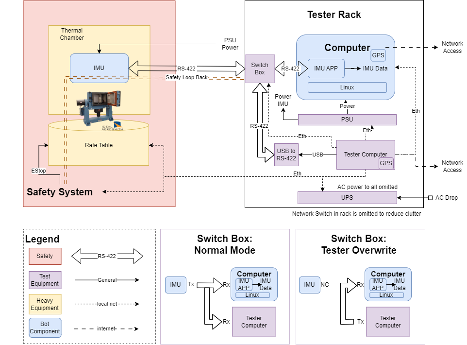
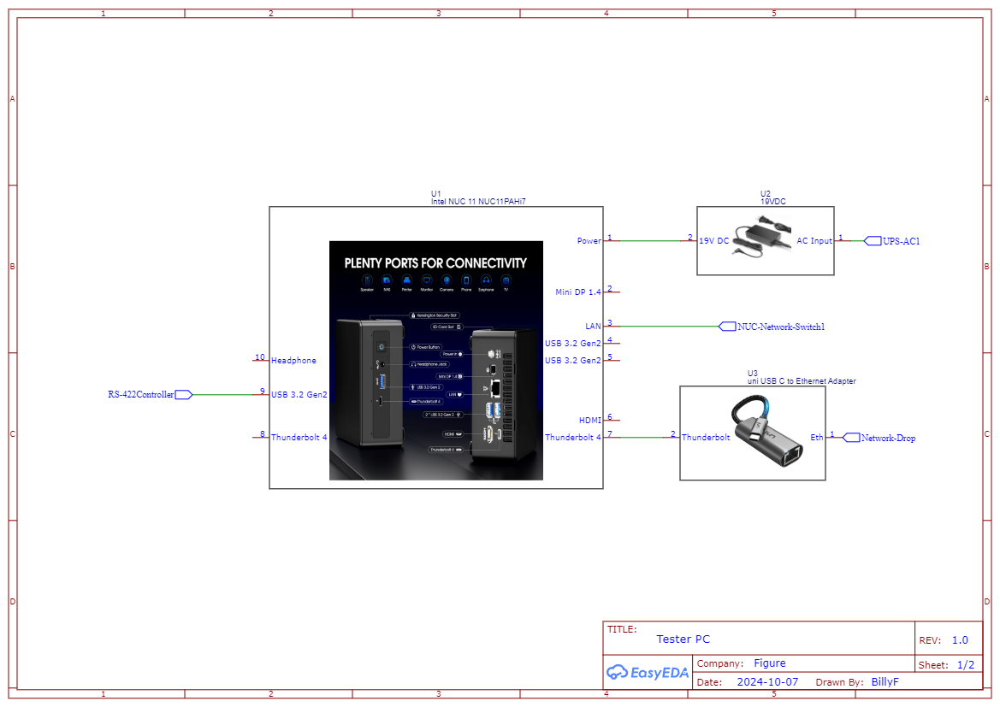
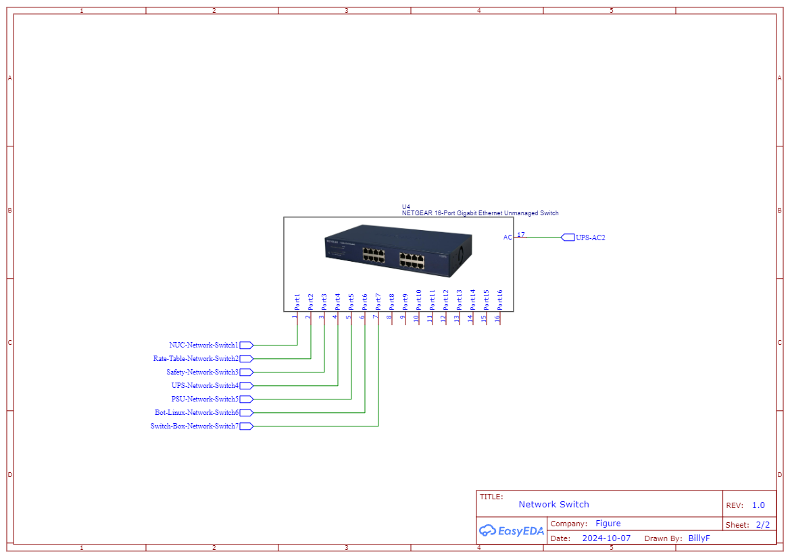
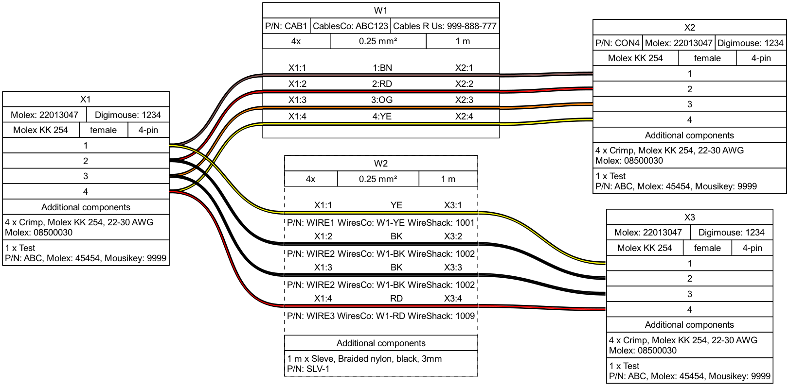

Figure IMU Subsystem Automation Test Design Doc
Overview
This case study focuses on automating the testing of an Inertial Measurement Unit (IMU) subsystem. The IMU system sends accelerations and angular rates to an application for attitude estimation. Key tasks include designing a test setup, preparing documentation for technicians, and implementing a Python test case.
*** This is a mock documentation, presented in the manner I would normally have in a working doc to point internal teams to.
Point of Contacts
Electrical Eng: xxxFirmware Eng: xxx
QA Eng: xxx
System Integration Eng: xxx
Tech : xxx
Test Automation Eng: Bill Fang
Pretend to be Useful Links
Altium Project LinkRepo Link
System Requirement Link
Table of Contents
- Figure IMU Subsystem Automation Test Design Doc
System Block Diagram
IMU System

Test Setup
The test setup utilizes a rate table with thermal chamber build as the main piece of equipment to provide precise control of the IMU position. A safety system (robot cell) is put in place to ensure the safety of turn table operation. A small tester rack is used to host other additional parts.

For more detail Link to build doc
Info
What is a rate table
A Two Axis Positioning and Rate Table System is a precision platform used for testing and calibrating sensors like gyroscopes and accelerometers by simulating controlled rotational movements along two perpendicular axes, pitch (vertical) and yaw (horizontal). These systems are designed for high accuracy in both positioning and rate of motion. They can achieve very fine angular resolutions, making them suitable for sensor calibration. 
Assumptions
Assumptions are important, below listed the top level assumptions of the whole system. Specific
assumptions will show up as notes within their context for easy reference.
Assumptions
Assumption-1 The IMU System hardware has been designed to meet the requirement with reasonable
design margins and the hardware has been validated for basic operations.
Assumption-2 The IMU is a stand alone in house control unit with its own MCU and it implements
standard protocols on top of the RS-422 interface. The IMU firmware is also regression target.
Assumption-3 The IMU is a Silicon MEMS type IMU in this application without magnetometer. Otherwise
further environment control measures are needed.
Assumption-4 The IMU has on board temperature sense and well defined calibration routines.
Assumption-5 DUT and test set up has been checked for workmanship and build to print.
Assumption-6 Testing covers a Industrial operating temperatures range of -40°C to +85°C.
Assumption-7 Test system design prioritize performance and accuracy with reasonable cost.
Assumption-8 System Computer running linux-RT the IMU app is allocated adequate resources and priority.
Assumption-9 This case study focus on automation test for firmware regressions. Automation tests
can also be done for hardware validation, reliability, and manufacturing with different focus. Those
test usage and set up are not considered.
Note
When a lower cost solution is desired. In case it is not obvious. The test set up is designed to have
really clean connections between the lift side (Heavy equipment) and the right side (tester rack).
In the case of we don't need as much of IMU hardware involvement. The IMU app can be tested with
simulated IMU data, and still run on real linux hardware.
Design Considerations
System Analysis
What do I know about the system and its limitations.
IMU properties
An Inertial Measurement Unit (IMU) typically consists of three key components:
- Accelerometers: Measure linear acceleration along the x, y, and z axes.
- Gyroscopes: Measure angular velocity or rotational rate around the same axes.
- Magnetometers (optional in some IMUs): Measure the magnetic field, providing orientation relative to Earth's magnetic field for better heading determination.
These components work together to provide information on motion, orientation, and velocity in space.

Types of IMUs and limitations
IMUs come in several types, each with different strengths:
- Silicon MEMS IMUs: Small, cost-effective, used in consumer electronics and industrial applications. Offer lower accuracy but are compact.
- Fiber Optic Gyro (FOG) IMUs: Provide high accuracy with no moving parts, ideal for navigation systems in aerospace.
- Ring Laser Gyro (RLG) IMUs: Highly precise, used in high-end aerospace and defense applications.
- Quartz MEMS IMUs: Known for stability and low drift, used in industrial and tactical applications.
More details can be found here.


image source: inertial-navigation-primer-r3
Accelerometer Performance Grades

Gyroscope Performance Grades

IMU design considerations
To achieve high IMU Accuracy the following factors need to be considered during design and validations.
- Zero-Bias Temperature Hysteresis: IMU output can deviate due to temperature changes. Using temperature compensation algorithms and choosing brands with precise compensation technology ensures reliability.
- Vibration Characteristics: IMUs should handle vibrations with features like vibration isolation and filtering to maintain accuracy.
- Repeated Power-On Deviation: Bias may vary after power cycles, impacting calibration. IMUs with minimal deviation or built-in compensation ensure long-term stability.
- External Forces: Shock-resistant designs reduce deviations under external forces.
- Nonlinear Factor: Lower %Fs ensures better measurement accuracy across the range.
Calibrations
Calibrating an IMU involves placing it on a stable surface for static calibration, then using manufacturer-provided software to guide through the process. Dynamic calibration follows, where the IMU is moved along different axes to adjust for sensor biases. If a magnetometer is included, rotate the IMU fully to capture magnetic field data, avoiding interference. Finally, verify accuracy by comparing outputs to expected values, and re-calibrate periodically to maintain performance.
RS-422 Spec


| Start Bit | Data Bits (8 bits) | Parity Bit | Stop Bit(s) |
|---|---|---|---|
| 0 | D0 D1 D2 D3 D4 D5 D6 D7 | P | 1 |
Test Coverage

Note
Test Things Where Most Effective: There are various ways we could test this subsystem. It
could be a full simulated environment with each component been module in a Software in the loop(SIL)
test, or we could instrument and modify the IMU to inject digital signals that replaces sensor IC
signals to avoid use of heavy equipment and improve fault injection ability. Or a system similar
to the proposed setup could be achieved at lower cost with less capabilities. And in real world,
we are likely to have each favor of the test infra and setup. Ideally we have all coverage on all
setup. In practice, we choose the most effective combination of set up that can provide sufficient
coverage given the time and resources in hand.
Assumptions
Assumption- Related test infrastures has been set up for result upload and store. This will
happen at test tear down which is omitted in the procedures below.
REQ-001 Attitude Accuracy
TEST-001 IMU full range accuracy sweep
This test checks for IMU's accuracy with small changes and impulse changes.
Test Procedure:
- Zero IMU location, RS-422 link to direct connection.
- Parameterized test sweeping each axis with 1 degree steps.
- Assert for each step the reported measure is within +/- 0.1 degree of the set position.
- Parameterized test sweeping each axis with 180 degree steps.
- Assert for each step the reported measure is within +/- 0.1 degree of the set position.
Assumptions
Assumption- The rate table is calibrated, it's set position is true position.
Info
The safety system will have a safety loop using magmatic connectors for form a safety loop. The rate table will emergency shunt off when the mage connector is disconnected. The safety loop harness is designed to be short than the RS-422 link harness to prevent and pull damage. And the rate table controls are also implemented to avoid wire pulling. 
TEST-002 IMU temperature compensation check
This test check for IMU's temperature compensation algorithm implementation.
Test Procedure:
- Parameterized test sweeping temperature from -40°C to +85°C with 5°C steps.
- Run TEST-001
Assumptions
Assumption- Tester has enough bandwidth to run this test overnight.
TEST-003 IMU drift test
Assumptions
Assumption- Assume IMU has data processing and correction algorithms implemented to prevent drifting.
This test check for IMU's correction algorithms. This is a run on idle test that run opportunistically when
no other job is available.
Test Procedure:
- Zero IMU location, set test chamber to room temp, RS-422 link to direct connection.
- Assert initial value is within expected zero location range +/- 0.1 degree.
- Record initial value and start a timer.
- Assert on every data received is within drift rate bound until terminated by governor.
- On teardown check upload drift rate measured in this test period in addition to results for data trend.
Assumptions
Assumption- Assume we have a test job governor running. We can notify job to end if we sees
other jobs come in.
TEST-004 IMU vibe check
This test check if IMU brings good vibe for the robot 😎
External factors like vibrations can affect IMU reading. And withing the robot there are some inherent vibrations resulting from motor control and operations. This test check for IMU system's ability to filter and offset the linear acceleration's affect on angular information. Check for motor control pwm frequency or load switching frequency from the near by subsystems that is within the sensor's bandwidth.
Test Procedure:
- Zero IMU location, set test chamber to room temp, RS-422 link to direct connection.
- Parameterized test with critical frequencies.
- Set vibration shaker to each frequency and measure assert reported attitude data within accuracy.
Check
Confirm with hardware team, this likely can be a hardware characterization test instead of a
regression item until further lessons learned.
REQ-002 RS-422 Error Rate
TEST-005 RS-422 Error Rate Test
Assumptions
Assumption- The robot harness has been designed properly and tested with representative
switching load that would run parallel to the RS-422 link in the robot. This test can also
be used for the characterization.

This test mainly targeting the IMU APP's ability to detect and report error rate correctly as a
regression test. The goal is to ensure the error rate stat is accurate.
Test Procedure:
- Zero IMU location, set test chamber to room temp.
- Switch RS-422 link to fault injections mod connecting:
tester PC RS-422 out<->RS-422 link<->IMU APP computer - Nominal Case send over 2e^5 messages, check total error reported <= 2
- Fault Case send over 2e^5 messages, with 6 error message check total error reported <= (2+6)
REQ-003 2ms Delay limit
TEST-006 IMU delay test

Assumptions
Assumption- The time taken for the host PC to send a command and receive a response from the rate table is known and well-defined.
Assumption- The IMU Linux computer and the tester PC has access to GPS receiver for GPS Clock sync.
This test verifies that the latency between a physical event and the data published by the IMUApp is within the specified 2 ms limit. The test uses GPS Clock to synchronize the clocks of the test systems, ensuring that accurate event timing is maintained.
Test Procedure:
- Zero IMU location, set test chamber to room temp, RS-422 link to direct connection.
- Ensure that both the tester computer and the IMUApp computer synchronize their clocks using GPS Clock.
- Trigger a physical event and record time stamp.
- Repeat for all axis directions.
- Process time stamp assert all latency is less than 2ms.
Info
GPS time sync accuracy is highly precise, with the ability to synchronize clocks and networks to Coordinated Universal Time (UTC) with an accuracy of 30 nanoseconds or less 95% of the time.
Atomic clocks
GPS satellites contain atomic clocks that keep time to within three nanoseconds.
GPS receivers
GPS receivers decode the signals from the satellites to synchronize themselves to the atomic clocks
Time card option example:


Note
Alternatives considered:
EtherCAT Distributed Clocks: EtherCAT can achieve time synchronization accuracy on the order of <1 µs (microsecond), with typical values often being around 100 ns (nanoseconds), depending on factors like network topology, number of devices, and cable lengths.Network Time Protocol (NTP): NTP can synchronize time across devices that differ by milliseconds to tens of milliseconds, even over wide-area networks (WANs) like the internet.Trigger Output: The signal generator should output a trigger signal simultaneously with the physical event. This signal can act as a reference point for when the event occurs.Oscilloscope or Logic Analyzer: Use a scope or logic analyzer to capture signal coming out of IMU and a trigger from linux computer when data is posted.
Additional Test Infrastructure
Other test / logging that could be considered: - CPU usage stats of the IMU app - Test equipment health check - Measure key value delta from average value from pervious mainline releases - Log run time for maintenance reminder
Tester Build Docs
This is the build doc for the IMU subsystem automation test.
POC: Bill Fang
Needed by: Nov 15, 2024
Budget Cost : SPEND123
Job Categories: heavy equipment land mechanical build harness build small rack build
- Tester Build Docs
- Block Diagram
- Schematics
- BOM
- Check List
- Equipment Manual
- Harness Diagram
- Cable 007
- Provision Instructions
- Check Network Settings
Block Diagram
Schematics
IMU_Tester_Schematics


BOM
Check List
- Schematics Walk Through
- BOM procurement
- Space allocation
- Facility Drop Requirement
- Internal parts placement
- Harness build
- PC provision
- Rack build
- ......
Equipment Manual
Power Supply Rigol DP831A (DP800Series)
Data Sheet
Programming Guide

Rate Table Ideal Aerosmith 1572P
Spec Sheet
Harness Diagram
Cable 007

source_file and Bill of Material
Warning
Watch out for null model cable for RS-422. Please label cable type null modem or not.
Provision Instructions
Check Network Settings
For host config setting: Click to expand
Add host to `~/.ssh/config`Host imu-tester-1
HostName imu-tester-1
User sa-auto
IdentityFile ~/.ssh/id_rsa_sa_auto
Config Tester PC network ip
# remote into tester host
ssh imu-tester-1
# check ip config
ifconfig
eth0 Link encap:Ethernet HWaddr 00:1A:2B:3C:4D:5E
inet addr:192.168.1.10 Bcast:192.168.1.255 Mask:255.255.255.0
inet6 addr: fe80::21a:2bff:fe3c:4d5e/64 Scope:Link
UP BROADCAST RUNNING MULTICAST MTU:1500 Metric:1
RX packets:1234567 errors:0 dropped:0 overruns:0 frame:0
TX packets:7654321 errors:0 dropped:0 overruns:0 carrier:0
collisions:0 txqueuelen:1000
RX bytes:987654321 (987.6 MB) TX bytes:1234567890 (1.2 GB)
Interrupt:20 Memory:fb000000-fb020000
lo Link encap:Local Loopback
inet addr:127.0.0.1 Mask:255.0.0.0
inet6 addr: ::1/128 Scope:Host
UP LOOPBACK RUNNING MTU:65536 Metric:1
RX packets:9876 errors:0 dropped:0 overruns:0 frame:0
TX packets:9876 errors:0 dropped:0 overruns:0 carrier:0
collisions:0 txqueuelen:0
RX bytes:654321 (654.3 KB) TX bytes:654321 (654.3 KB)
# confirm eth0 addr is set to 192.168.1.10
exit
Test Case Implementation
Here’s a Python implementation of TEST-006: IMU Delay Test using pytest and assuming an ideal test framework with an API that interacts with the IMU and tester computers.
Assumptions
Assumption- Proper flashing sequence exists in infra and already been done before test run.
# imu_delay_test.py
import pytest
import time
import threading
import logging
from logging.handlers import RotatingFileHandler
from datetime import datetime
from enum import Enum, auto
# Assuming an ideal API for test framework
from imu_test_framework import IMU, Tester, ResultUploader, LinuxComputer
# Constants
MAX_LATENCY_MS = 2.0 # Maximum allowed latency in milliseconds
LOG_INTERVAL_MS = 0.5 # Interval in seconds for logging trace data (0.5ms for 2kHz report rate)
LOG_FILE_SIZE = 5 * 1024 * 1024 # 5MB maximum size for each log file
BACKUP_COUNT = 3 # Keep 3 backup log files
ROOM_TEMP_C = 26.0 # Room temp 26C
EVENT_REACTION_TIME_MS = 0.045 # The Reaction time from a command to physical event
class 422LinkType(Enum):
NORMAL = auto()
TESTEROVERWRITE = auto()
# Configure the logger at the module level
logger = logging.getLogger(__name__)
logger.setLevel(logging.INFO)
# Setup log rotation handler
file_handler = RotatingFileHandler(
"imu_trace_log.log", maxBytes=LOG_FILE_SIZE, backupCount=BACKUP_COUNT
)
formatter = logging.Formatter(
"%(asctime)s - %(threadName)s - %(levelname)s - %(message)s"
)
file_handler.setFormatter(formatter)
# Stream handler for console logging
console_handler = logging.StreamHandler()
console_handler.setFormatter(formatter)
# Add both handlers to the logger
logger.addHandler(file_handler)
logger.addHandler(console_handler)
def trace_logger(imu, linux_computer, stop_event):
"""
Thread function to log data from both IMU and the Linux computer.
:param imu: IMU object from which to fetch data.
:param linux_computer: Linux computer object to fetch IMU subsystem data.
:param stop_event: Event to signal the thread to stop logging.
"""
while not stop_event.is_set():
# Fetch and log IMU data
imu_data = imu.get_data()
logger.info(f"IMU Data: {imu_data}")
# Fetch and log Linux computer system data
linux_data = linux_computer.get_system_stats()
logger.info(f"Linux IMU Subsystem Data: {linux_data}")
# Wait for the next logging interval (0.5 ms for 2kHz reporting)
# TODO: @zhengsfang time.sleep is not accurate, test and upsample if needed
time.sleep(LOG_INTERVAL_MS)
@pytest.fixture(scope="module")
def setup_imu_and_tester():
"""
Fixture to initialize the IMU and tester computers, perform calibration, time synchronization,
and manage trace logging. Returns IMU, tester, and logging control.
"""
imu = IMU() # Test PC's RS-422 connection to IMU
tester = Tester() # All tester equipment controls
linux_computer = LinuxComputer() # Controls to subsystem app Linux Computer
# Step 1: Zero IMU location, set test chamber to room temp, RS-422 link to direct connection.
tester.rate_table_zero()
tester.set_temp(ROOM_TEMP_C)
tester.set_422_link(422LinkType.NORMAL)
# Step 2: Perform time synchronization using GPS Clock
linux_computer.gps_sync()
tester.gps_sync()
# Start trace logging thread
stop_event = threading.Event()
logging_thread = threading.Thread(
target=trace_logger,
args=(imu, linux_computer, stop_event),
name="TraceLoggerThread",
daemon=True
)
logging_thread.start()
# Yield IMU, tester, linux_computer, and stop_event to the tests
yield imu, tester, linux_computer, stop_event
# Stop the logging thread
stop_event.set()
logging_thread.join()
# Upload results and statistics after the tests are complete
uploader = ResultUploader()
uploader.upload_stats(imu.get_stats())
uploader.upload_results(tester.aggregate_results())
@pytest.mark.parametrize("axis", ["x", "y", "z"])
@pytest.mark.parametrize("turn_degrees", ["1", "60", "180"])
def test_imu_delay(axis, turn_degrees, setup_imu_and_tester):
"""
Test that the IMUApp responds to physical events on all axes (X, Y, Z) and across different
event sizes (small, medium, large) with a latency of less than 2 ms.
:param axis: The axis (x, y, z) for which to trigger the event.
:param turn_degrees: The size of the event "1", "60", "180" (small, medium, large), simulating
different physical conditions.
:param setup_imu_and_tester: Fixture to set up the IMU, tester, and logging thread.
"""
imu, tester, linux_computer, stop_event = setup_imu_and_tester
# Step 3-4: Trigger a physical event of the given size on the specified axis
# Return the exact time of the physical event (this will be T_event)
event_timestamp = tester.set_rate_table(axis=axis, degree=turn_degrees)
# Capture the IMU System's response data timestamp
imu_data = linux_computer.get_data() # Assuming this method fetches the data with timestamp
# Calculate latency (T_output - T_event)
latency_ms = (imu_data['timestamp'] - event_timestamp) * 1000 - EVENT_REACTION_TIME_MS
# Log message for the specific axis and turn
logger.info(f"IMU latency for {axis} axis, {turn_degrees} degree: {latency_ms:.3f} ms")
# Step 5: Assert that the latency is below the maximum allowed value
try:
assert latency_ms <= MAX_LATENCY_MS, (
f"Latency too high: {latency_ms:.3f} ms for {axis} axis, {event_size} event"
)
except AssertionError as e:
logger.error(f"Assertion failed: {e}")
raise
# Test framework API assumptions:
# imu.gps_sync() -> Synchronizes IMU clock with GPS Clock
# tester.gps_sync() -> Synchronizes Tester computer clock with GPS Clock
# tester.set_rate_table(axis, degree) -> Triggers a physical event of specified degree on the given axis and returns the event time
# linux_computer.get_data() -> Returns a dictionary with IMU data and a 'timestamp' key indicating when the data was published
# linux_computer.get_system_stats() -> Returns system statistics from the Linux computer
# imu.get_stats() -> Retrieves statistics gathered during the test
# tester.aggregate_results() -> Retrieves test results and logs for uploading
# ResultUploader.upload_stats(stats) -> Uploads collected test statistics
# ResultUploader.upload_results(results) -> Uploads test results after the test suite completes
Team, Processes, and Tools
Team
Electrical Eng:
- Talking to EE for board specs and power requirements. Any circuit related deep dive.
- Request test points for future rev.
- Share any bug found.
- Share automations script that can also be leverage for design validation.
Firmware Eng:
- Communicate to fw dev on what is our existing automation tester capability.
- Collaborate on fw team to help understand certain system behavior, debug trace.
- Request additional data logging or new service routine to be added.
- Scope automation infra needs for developers to create tests as the develop new features.
QA Eng:
- Understand the top offending failure trend.
- Request new matrix and dashboard.
- Align on reporting schema that can be used across the board.
- Add automation test coverages to help faster release sign off.
System Integration Eng:
- Learn about the subsystem bug that escaped to system level and add coverages.
- Learn about time consuming operations that can be helped with automation test coverages.
- Align on coverage distribution, don't step over each other.
Tech:
- Request build help.
- Document feedback & red line.
- Learn about commonly stocked/preferred common parts.
- Learn about how to improve build documents.
Test Automation Eng:
- Share latest development of infrastures and best practices.
- Learn about other subsystem automation setup and what can be reused.
Processes and Tools
Having a interactive test requirement tracking process would be helpful for a rapidly moving organization.
As new requirement and assumptions emerge quickly in a start up. An easy to use test requirement tracking matrix tool that could provide low friction for developer to keep it up to date, and also provide a tracking of existing coverage and their state of health would offer great benefit. The team can have the minimum amount of coverage at early stage with quick implementation and add duplicated coverage when feature matured for more test bandwidth and availability.
A nice-to-have leader board for people to put up their common complaints and desired quality of
life improvement will be a good way to create traction on making feedback or improvements.
New tool show and tell or technical section deep dive will be good ways to share lessons learned
and grow the general knowledge on systems.